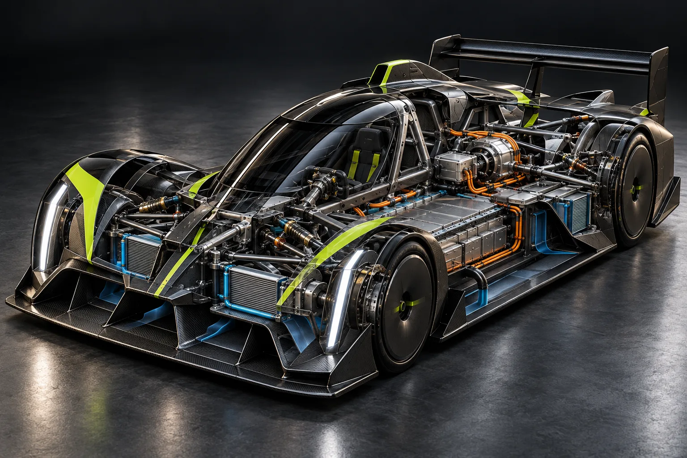

THE ELECTRIC RACING CHAMPIONSHIP / 2032 EIGHT ROUNDS / MOROCCO
FULLCHARGE.NO LIMITS.
Sixteen drivers. Eight teams.
One country built for speed.
01 / THE NEW ERASCROLL TO EXPLORE ↓
2032 SEASON
08 ROUNDS08 TEAMS16 DRIVERSALL-ELECTRICONE CHAMPION
MOROCCO ONLY ↗01 / THE SERIESTHIS IS
THIS IS
NOT A
QUIET
SPORT.
IR / 32
Across Morocco's coasts, mountains, cities and desert edge, the world's most ambitious electric racing grid goes all in.
A fully imagined championship. A world built with the precision of the real thing.
DISCOVER THE SERIES ↗02 / THE CALENDARA COUNTRY.
A COUNTRY.
EIGHT CHALLENGES.
Eight distinct circuits. Eight very different ways to win.
R01 / MAR 20↗
COASTAL SPEED
TANGIER
Strait Circuit5.12 KM · 17 TURNS
R02 / APR 10↗
MOUNTAIN PRECISION
TETOUAN
Ridge Circuit4.36 KM · 19 TURNS
R03 / MAY 01↗
URBAN CONTROL
RABAT
Bouregreg Circuit3.97 KM · 15 TURNS
R04 / MAY 29↗
AFTER-DARK COMBAT
CASABLANCA
Grid Circuit4.85 KM · 18 TURNS
R05 / JUN 26↗
OPEN-THROTTLE FLOW
AGADIR
Atlantic Circuit5.64 KM · 14 TURNS
R06 / JUL 24↗
THERMAL ENDURANCE
OUARZAZATE
Redline Circuit4.79 KM · 20 TURNS
R07 / SEP 04↗
FOREST RHYTHM
IFRANE
Cedar Circuit4.18 KM · 21 TURNS
R08 / OCT 02↗
THE GRAND FINALE
MARRAKECH
Crown Circuit5.29 KM · 16 TURNS
03 / THE RIVALRYEVERY
EVERY
SECOND
MATTERS.
Revisit the decisive battles of the 2032 season with our fictional race replay experience.
OPEN RACE CENTRE08RACE
ARCHIVES
ARCHIVES
04 / THE PADDOCKEIGHT TEAMS.
EIGHT TEAMS.
ONE TARGET.
Different philosophies. The same electric platform.
05 / THE TITLE FIGHTTHE
THE
POINTS
DON'T LIE.
Eight rounds. One final table. Every position counts.
FULL STANDINGS ↗| POS | DRIVER / TEAM | NO. | PTS |
|---|---|---|---|
| 01 | Yassine El MansouriAtlas Volt Racing | 07 | 162 |
| 02 | Isla BennettStratos Engineering | 11 | 149 |
| 03 | Haruka SatoKairo Dynamics | 18 | 97 |
| 04 | Mateo RivasSolara Velocity | 31 | 66 |
| 05 | Jordan HayesEmberline Motorsport | 55 | 51 |
06 / THE MACHINETHE SCIENCE
THE SCIENCE
OF SPEED.
A single chassis. Thousands of decisions. Explore the anatomy of the fictional IR-32 electric racing prototype.
EXPLORE THE IR-32 ↗
07 / FROM THE TRACKBEYOND THE
BEYOND THE
CHEQUERED FLAG.
Three defining moments of the season.